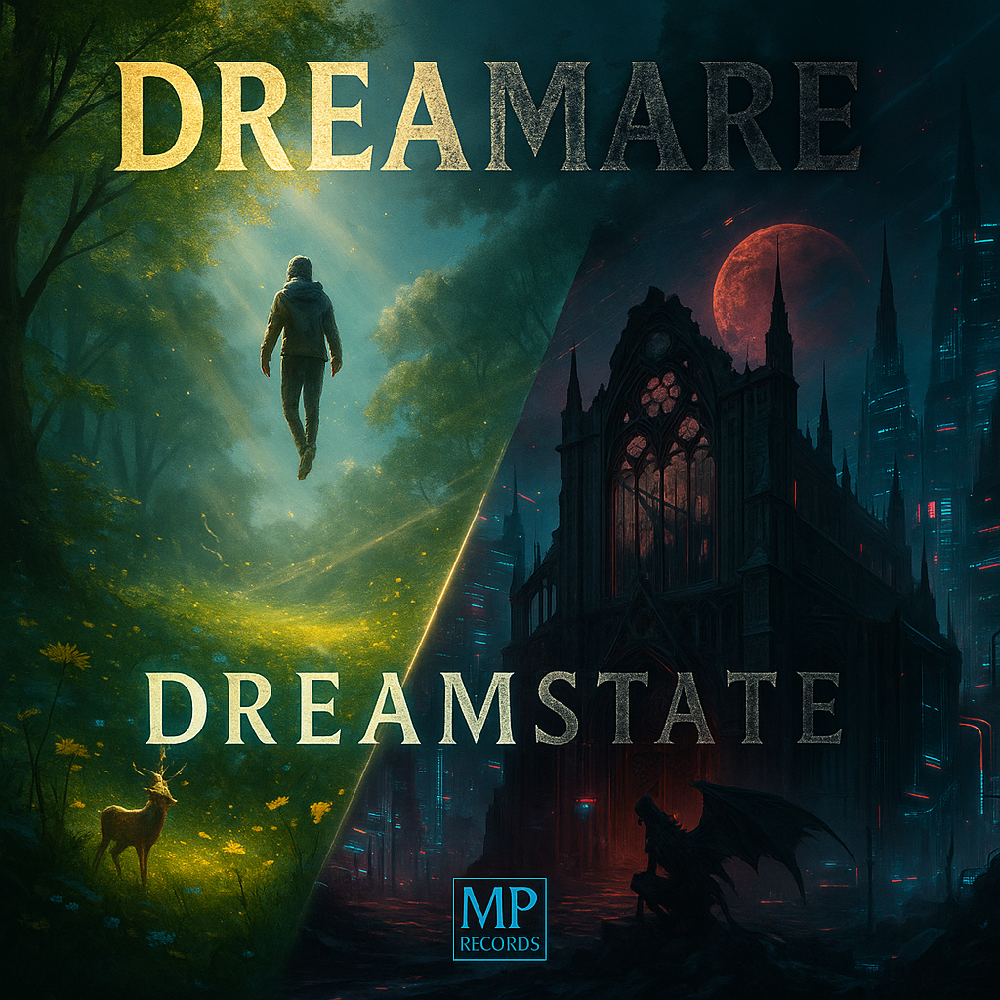

◯DREAMSTATE

01 / 2025
Dreamstate
Where it all begun.
Here is held an archive of places never visited, memories almost forgotten, and stories that survive the waking world.
ENTER DREAMSTATE01 / RECORDS
Each record is a different passage into the Dreamstate.
LISTEN TO DREAMARELISTEN / DREAMARE
Listen to a Dreamare album right here, or open it on your favorite platform.
02 / AN UNFINISHED ATLAS
But all memories have their cost.
03 / THE WAKING WORLD
ENTER DREAMSTATE
Find Dreamare on the platforms where the music lives.